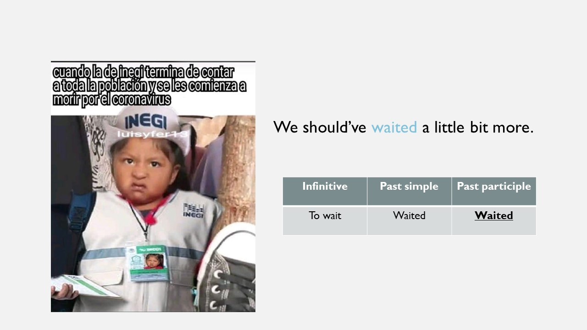
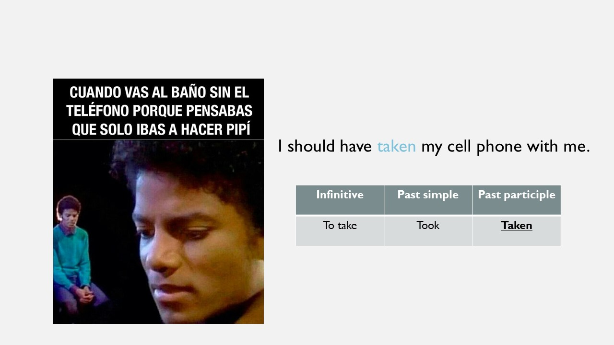
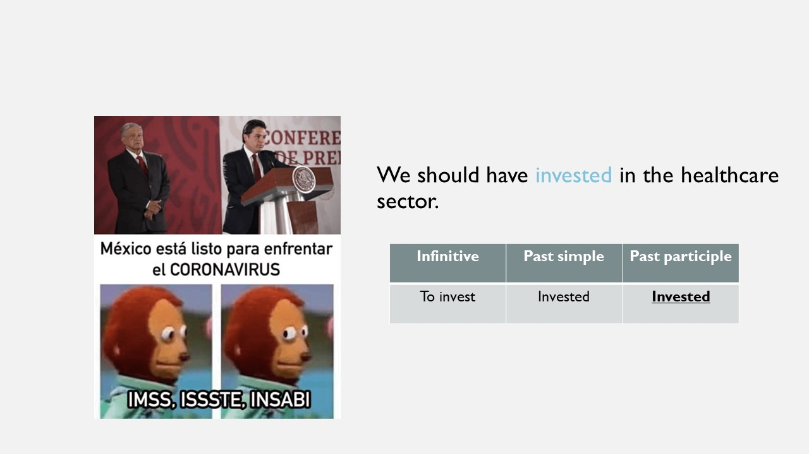

Explanation
I.  Watch this video with the explanation of the structure.
Watch this video with the explanation of the structure.
II.  Take notes about it.
Take notes about it.

I.  Watch this video with the explanation of the structure.
Watch this video with the explanation of the structure.
II.  Take notes about it.
Take notes about it.
Now, according to the information presented in the video, decide if the following sentences are TRUE or FALSE.
True
TRUE! We use it to express things that were different in the past.
True
TRUE! Here, we mean that this idea was not good option...
False
FALSE! We always have to use the past participle form.
False
FALSE! We use have with all the personal pronouns.
Now, observe these examples about real-life situations :)



Can you see? These situations (in the present) are about past actions that we cannot change now, but we wish that they could have been different. This is the most important idea about the should have + participle structure.
Licensed under the Creative Commons Attribution Share Alike License 4.0